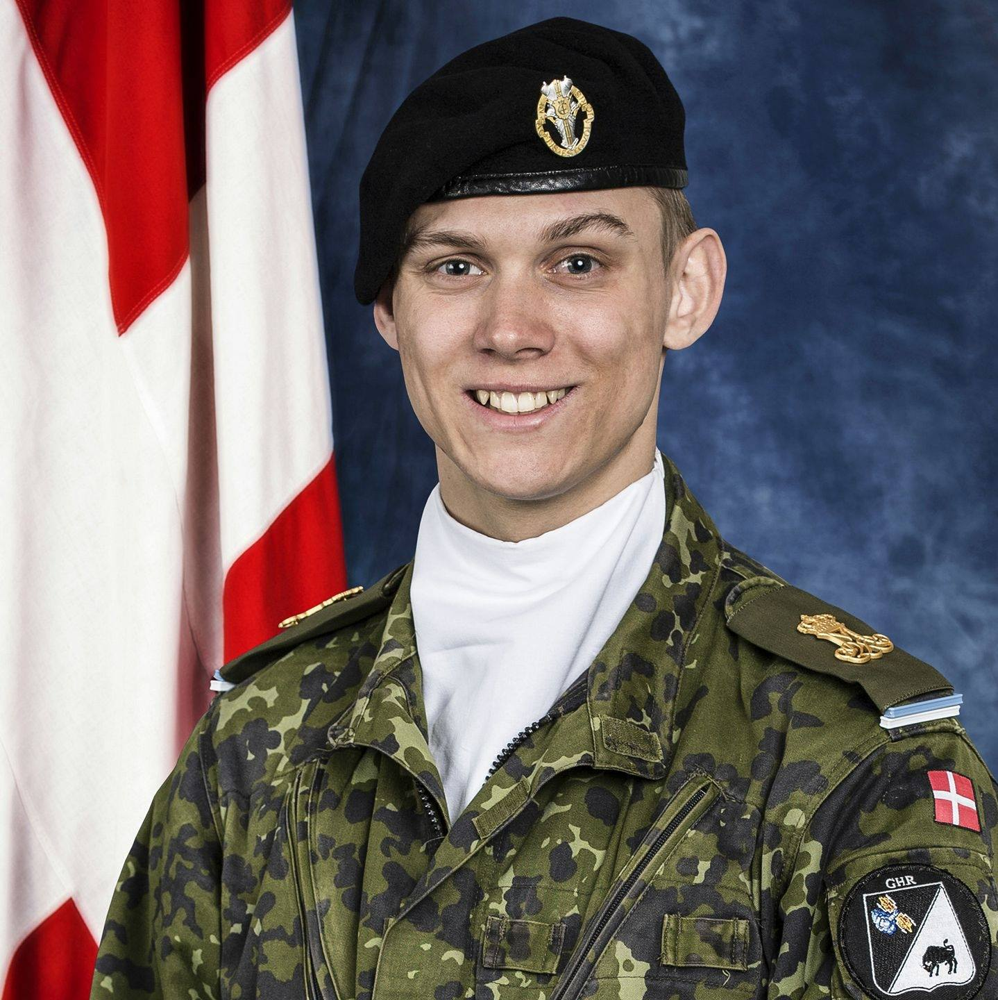
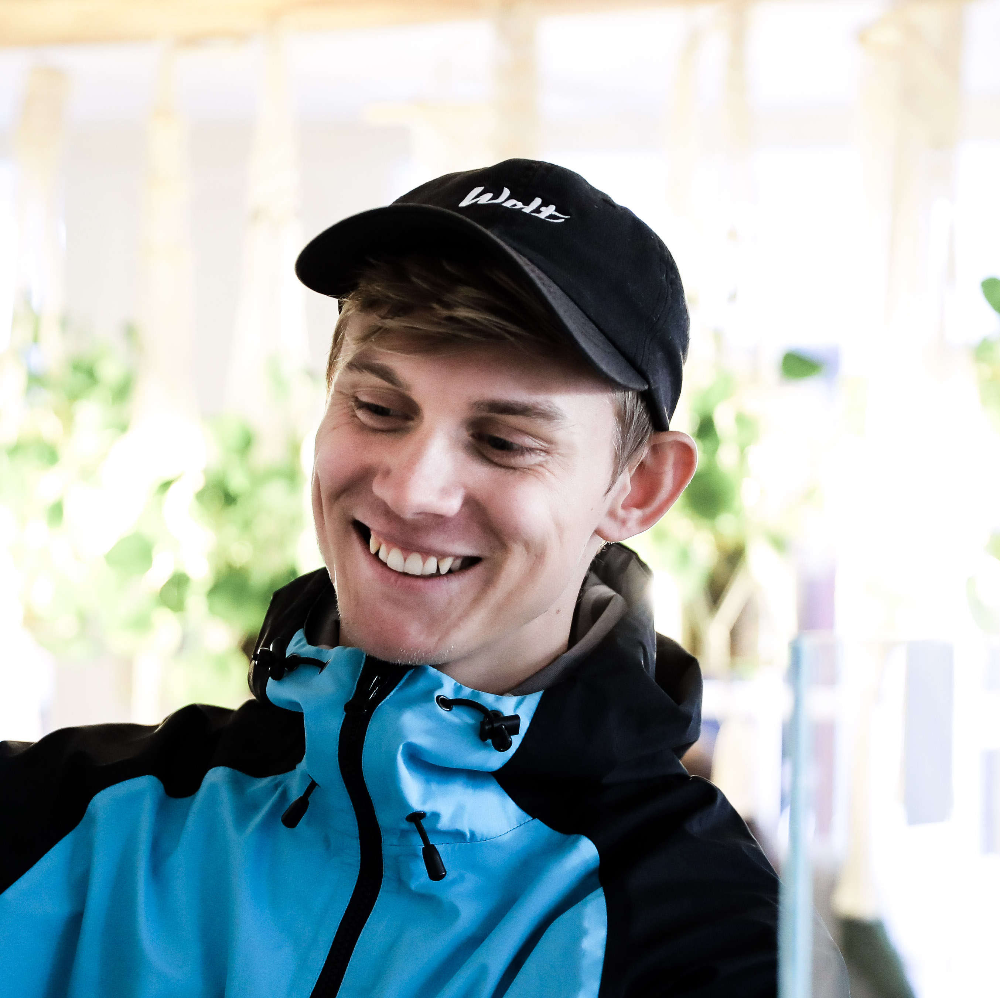
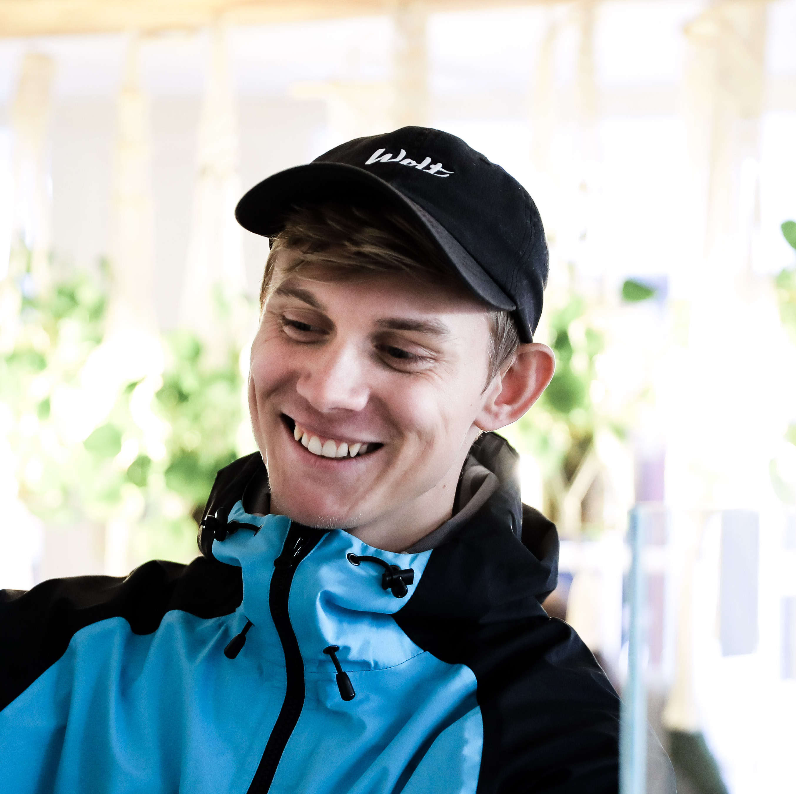

Hvem er jeg?

 
Mit navn er Oliver Juul Hansen og jeg er 24 år gammel.

Mit navn er Oliver Juul Hansen og jeg er 24 år gammel.
Jeg er bosat med min elskede kæreste, Nadia,
ude ved flyverne i Kastrup. Jeg er født og opvokset, i en lille landsby, nær Frederikssund.
Frederikssund er også stedet, hvor jeg har rendt rundt og sparket til en bold, i de seneste 20 år, sammen med alle mine venner.
Lige nu, er jeg i færd med at tage min uddannelse på CPHBusiness, hvor jeg studerer en PBA i e-handel.
En uddannelse, som jeg færdiggør i januar, 2023. Jeg blev færdig som markedsføringsøkonom, også på CPHBusiness, i januar 2021,
og kunne hurtigt mærke, at jeg ville lære mere omkring forbrugernes tanker og handlinger, i en evigt voksende, digital, verden.
Beslutningen om en videregåendeuddannelse, efter markedsføringsøkonomuddannelsen, var derfor ligetil og ikke en svær beslutning.
Jeg har et studiearbejde ved siden af uddannelsen, hvor jeg arbejder 3-4 gange om ugen, i Wolt Danmark.
Her har jeg arbejdet siden sommeren 2018 og haft mange roller gennem tiden.
Dertil, var jeg også så heldig
at jeg kunne få lov til, at være den første i Wolt Danmarks historie, som landede en praktikplads i virksomheden.
Jeg var i praktik i 3 måneder,
i marketing-afdelingen, hvor jeg siden hen blev ansat på deltid i samme afdeling.
Der er sket meget siden min første dag i Wolt, som Support Associate, til nu, hvor jeg sidder som daglig leder (Shift Lead), i en Support afdeling,
med tæt på 200 ansatte. Ved siden af mit arbejde som Shift Lead,
har jeg sammen med en kollega, ansvaret for et team på 6 personer,
der på daglig basis, er behjælpelig med opgaver i marketing-afdelingen.
Jeg er utrolig stolt af mit arbejde for Wolt.
Det var lidt om, hvad jeg bruger min tid på til dagligt og hvor kommer fra.
Men hvem er jeg så, som person?
 Det er altid svært at sætte ord på sig selv og definere hvem man er, ved at sætte sig selv i kasser. Dog tog jeg i forbindelse med studiet,
en "Talenttest", hvor jeg fik sat nogle ord på, hvem jeg er som person.
Det er altid svært at sætte ord på sig selv og definere hvem man er, ved at sætte sig selv i kasser. Dog tog jeg i forbindelse med studiet,
en "Talenttest", hvor jeg fik sat nogle ord på, hvem jeg er som person.
Talenttesten definere mig som værende iderig, optimistisk,
inkluderende, fremtidsorienteret og relaterende.
Hvordan kommer det så til udtryk? Det gør det, gennem mit arbejdsliv, privatliv og studeliv.
Hver område, definere hvem jeg er. Én ting, som jeg virkelig gør en dyd i, er at jeg altid giver mig selv 100% og ikke er bange for, at vise folk,
hvem jeg er. Selvfølgelig tilpasser jeg mine handlinger og agerende afhæning af hvor jeg befinder mig, men jeg vil altid være mig. Frisk, engageret og 100% målrettet.